---
{
"layout": "note",
"title": "[Engineering Mathematics] Ch 3. Higher-order Linear ODE",
"journal": true,
"section": "Study",
"topic": "Engineering Mathematics",
"excerpt": "[Engineering Mathematics] Ch 3. Higher-order Linear ODE 이제 1,2차 아닌 n차인 경우. 이렇게 N th order 인 Linear Homogeneous ODE를 정의 할 수 있다. 그리고",
"classes": "wide",
"permalink": "/blog/mechanical-engineering/engineering-mathematics/engineering-mathematics-ch-3-higher-order-linear-ode/",
"study_area": "Mechanical",
"date": "2024-04-09",
"source_url": "https://jeffdissel.tistory.com/m/49",
"header": {
"teaser": "/blog/mechanical-engineering/engineering-mathematics/engineering-mathematics-ch-3-higher-order-linear-ode/images/img-001.png"
}
}
---
{% raw %}[Engineering Mathematics] Ch 3. Higher-order Linear ODE
이제 1,2차 아닌 n차인 경우.
이렇게 N th order 인 Linear Homogeneous ODE를 정의 할 수 있다.
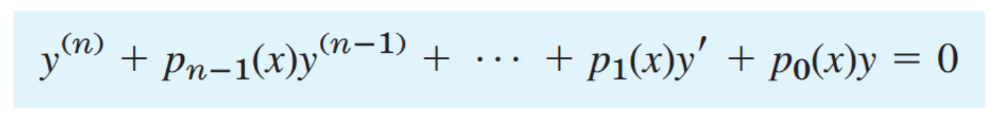
그리고 Genearl solution은 n개의 solution의 합으로 나타낼 수 있다.
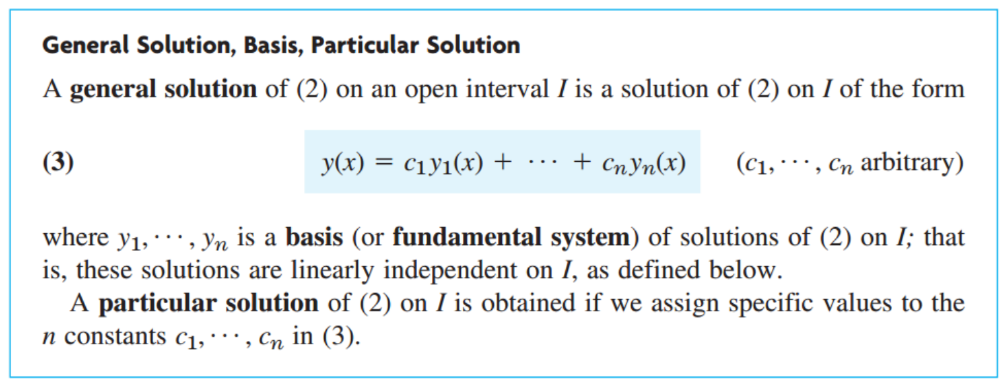
여기서 전 2차에서 언급한대로, y1,y2,y2 ... yn은 모두 linearly independent 해야만 한다.
확인하는 방법은???
Wronskian
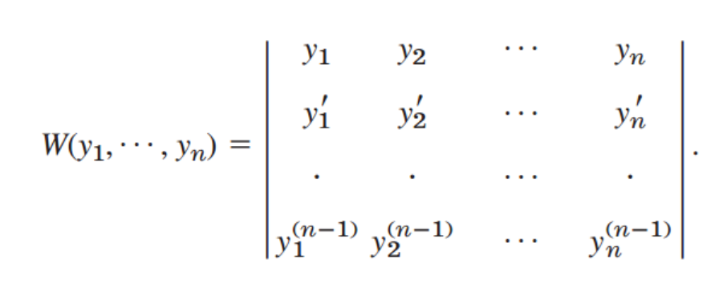
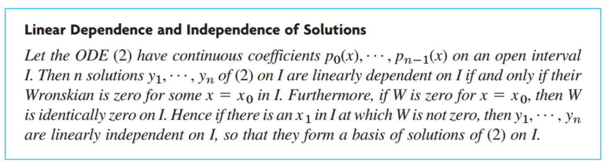
W가 0 이 아닌 y1,y2,y3,...yn이 존재한다면 그렇다면, Linearly independent하다는 말이다.
자 이제 해를 구해보자. 먼저, 쉬운 경우 부터 살펴보자.
y항의 계수가 모두 상수인 경우이다.
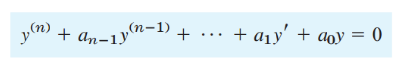
y = e^(
λx) 로 가정하면,
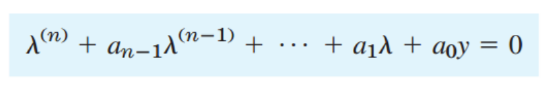
여기서, 경우를 나누어 주어야 한다.
1. 모두 서로 다른 실근 인 경우
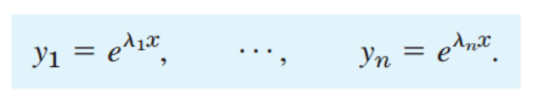
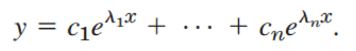
2. 실근인 중근이 있을 경우,
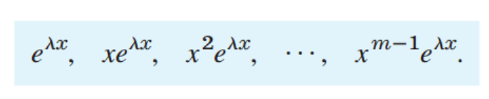
3. 허근일 경우
(λ = r + iw)
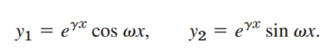
4. 중첩되는 허근이 있을 경우
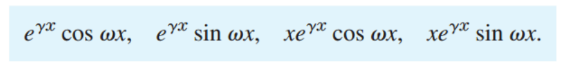
Example)
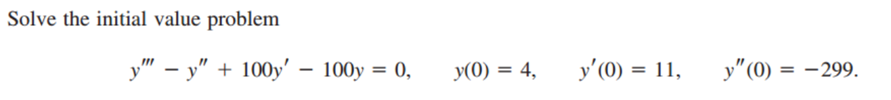
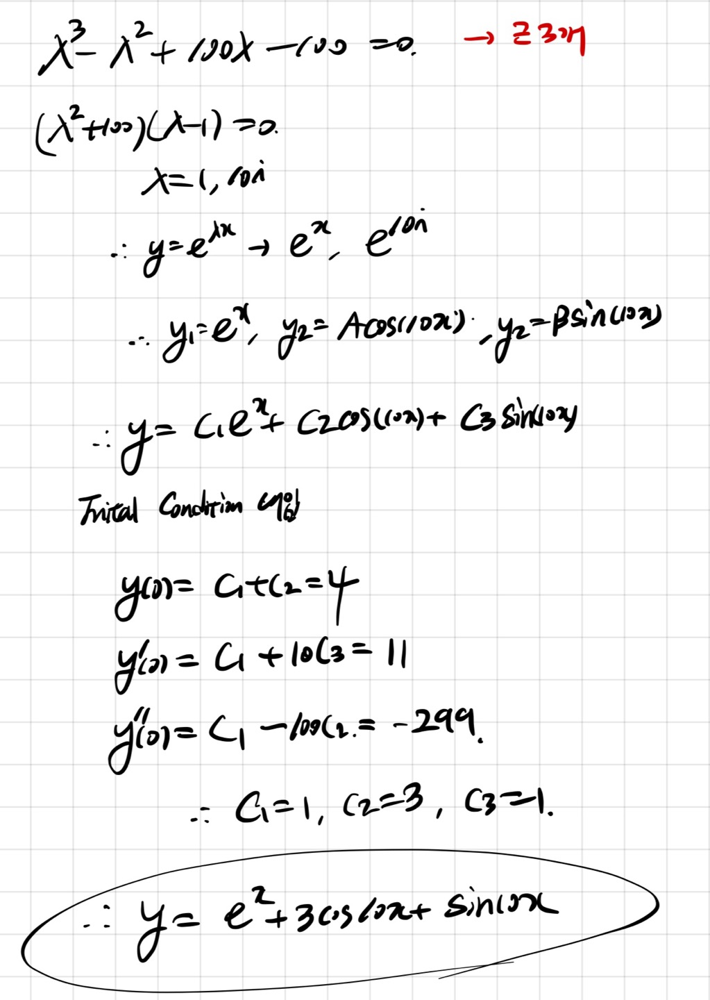
즉, 이렇게 실근과 허근이 공존 할 수 있다.
이제, Non-homogeneous 인 경우를 살펴보자.
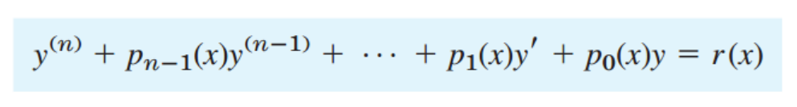
2차와 마찬가지로 두가지 방법이 있다.
1. Method of Undetermined Coefficeints
(Homogeneous의 해 yh(x), particular solution yp(x)의 합으로 나타내기)
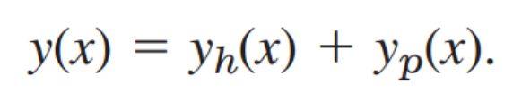
yp(x)를 구하는 방법은 다음과 같다.
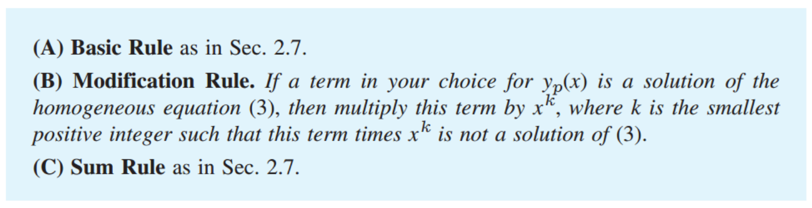
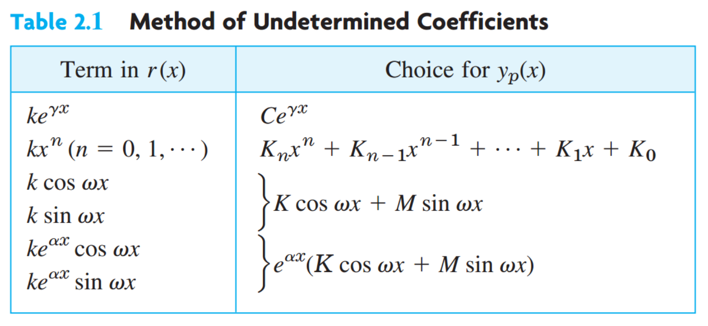
Rule (A) r(x)의 함수 형태를 보고, 표를 통해 yp(x)를 예측 하는 것이다.
Rule (B) 하지만 구한 yp(x)가 만약에 Homogeneous solution yh(x)안에 들어있다면??
y1,y2,y3...yn에 포함 되어있다면, x^k 를 곱하라는 의미이다.
Rule (C) y = yh + yp 가 최종 General Solution이라는 의미.
언제나 그렇듯이, 문제를 풀어야 이해가 쉽다...
Example)
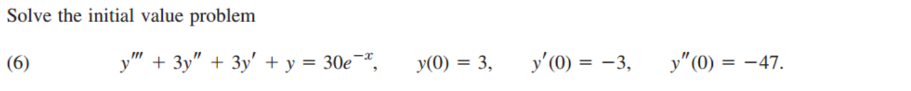
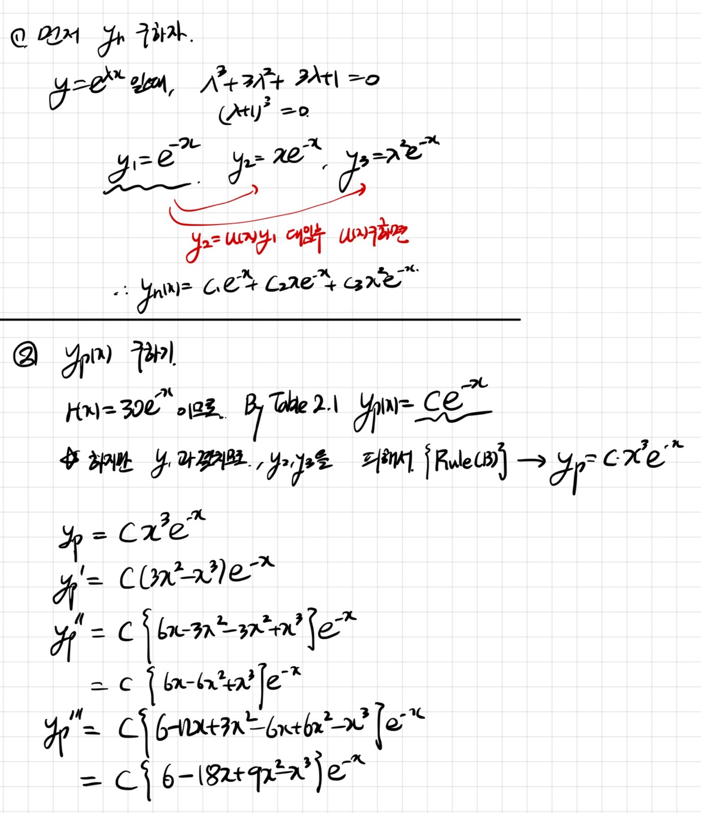
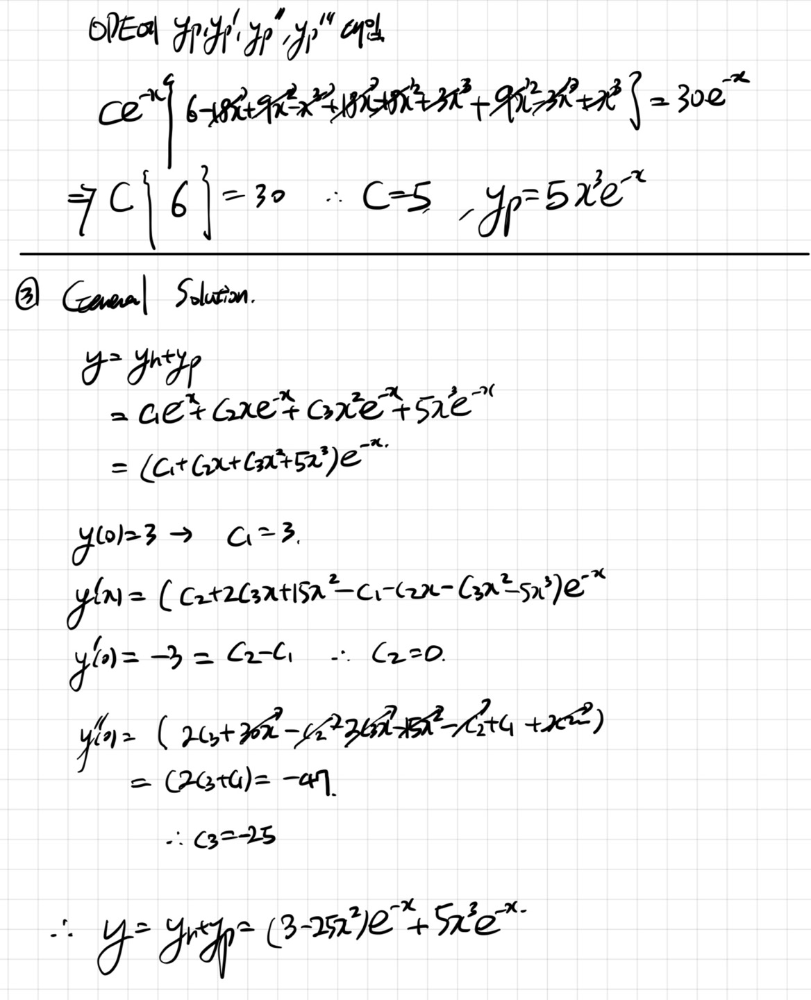
2. Method of Variation of Parameters
이전 방법의 단점은 2차ODE에서 언급 한것과 마찬가지로,
Table에 없는 R(X)의 경우에는 yp를 구할 수 없다는 것.
따라서, General 방법은 다음과 같다. (증명은 2차와 동일하므로 생략)
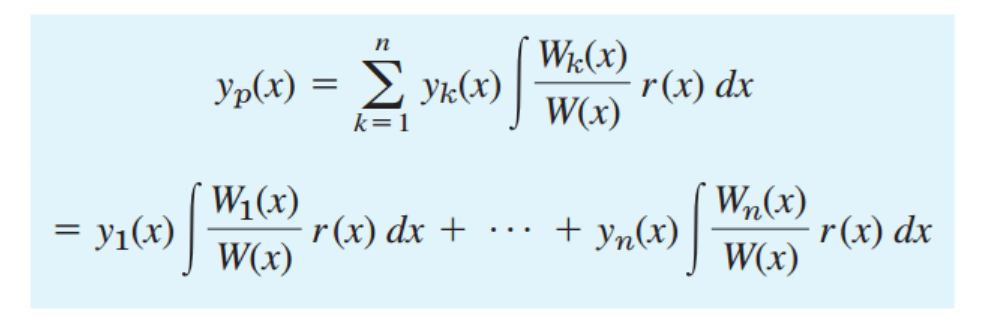
W는 Wronskian으로 다음과 같고,
여기서 새롭게 정의된, W1(x) , W2(x),.... Wn(X)는
Wj(x)는 W(x)에서, j번째 column이
I
인 것을 의미한다.
Example) n = 2인 경우
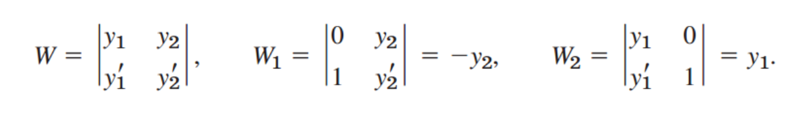
예제문제로 감을 잡아보자,
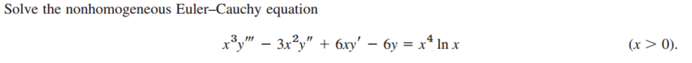
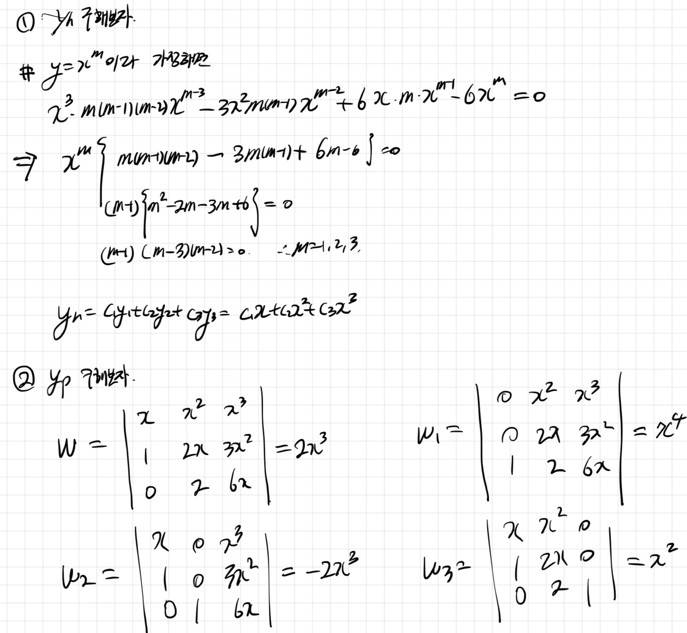
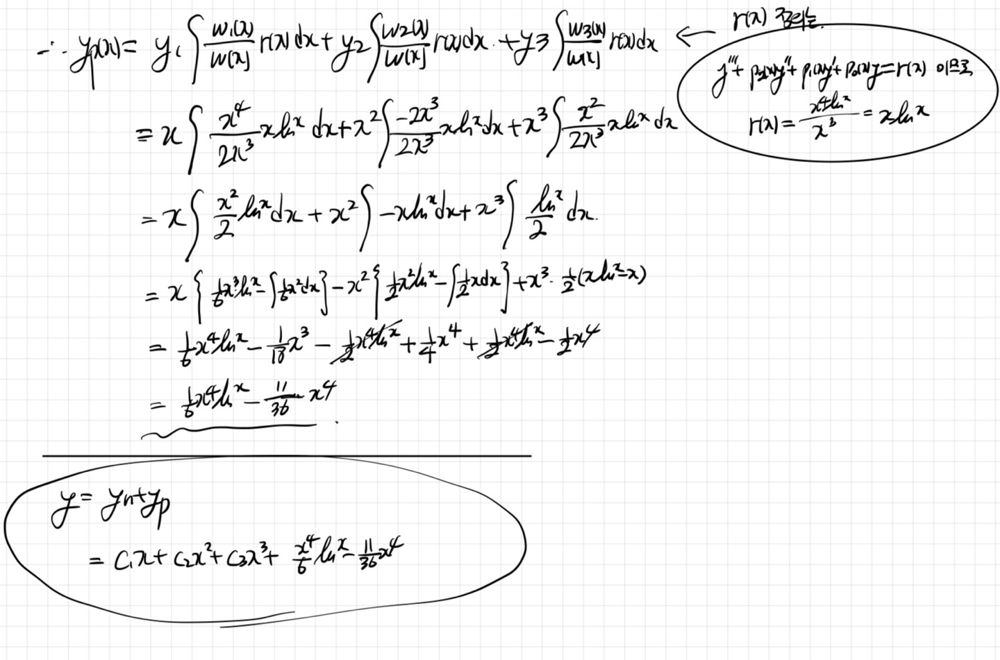
{% endraw %}